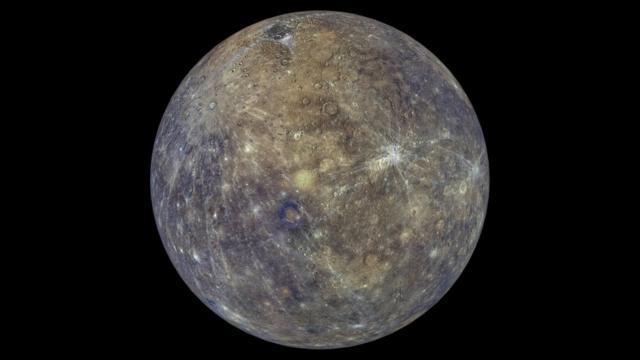
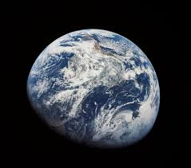
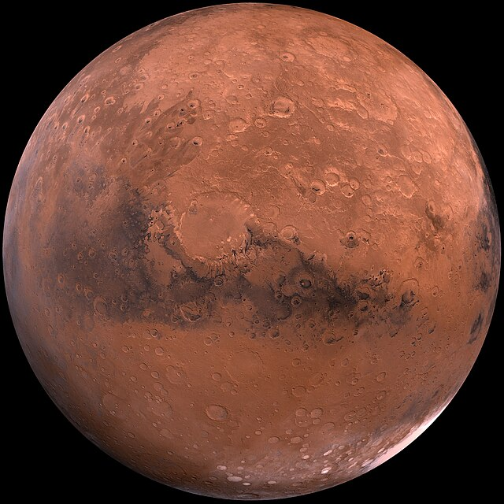

Planetas rocosos
Mercurio
Mercurio es el planeta más cercano al Sol y el más pequeño del sistema solar. Tiene una superficie rocosa y está cubierto de cráteres debido a la intensa actividad meteorítica. Su atmósfera es muy delgada y su temperatura varía drásticamente entre el día y la noche.
Caracteristicas
- Mercurio es el planeta más pequeño de nuestro sistema solar.
- Mercurio es un planeta terrestre y rocoso.
- Mercurio tiene una exosfera delgada.
- La superficie de Mercurio puede subir hasta 427 grados Celsius durante el día y bajar hasta -184 grados Celsius durante la noche.
- Los polos de Mercurio tienen hielo de agua.
Venus

Venus es el segundo planeta del sistema solar y es conocido como el "planeta gemelo" de la Tierra debido a su tamaño y composición similar. Sin embargo, su atmósfera es extremadamente densa y está compuesta principalmente por dióxido de carbono, lo que genera un efecto invernadero descontrolado y temperaturas superficiales extremadamente altas.
Caracteristicas
- Es el planeta más cálido del sistema solar.
- Es un planeta terrestre: es pequeño y rocoso.
- Su atmósfera es densa: atrapa el calor y por eso es tan caluroso.
- Tiene una superficie activa, que incluye volcanes.
- Gira en dirección contraria a la Tierra y la mayoría de los planetas.
- Un día dura 243 días terrestres.
- Un año dura 225 días terrestres.
Tierra
Nuestro hogar, el planeta Tierra, es un planeta terrestre y rocoso. Tiene una superficie sólida y activa, con montañas, valles, cañones, llanuras y mucho más. La Tierra es especial porque es un planeta océano, ya que el agua cubre el 70% de su superficie.
Caracteristicas
- La Tierra es un planeta terrestre. Es pequeño y rocoso.
- La atmósfera terrestre tiene el grosor perfecto para mantener la temperatura templada del planeta, para que seres vivos como nosotros podamos vivir en él.
- Un día en la Tierra dura algo menos de 24 horas.
- Un año en la Tierra dura 365,25 días.
- La Tierra es el único planeta que tiene solo una luna.
- La Tierra es el tercer planeta desde el Sol en nuestro sistema solar.
Marte
Marte es un mundo frío y desértico. La temperatura media en Marte es de -65 grados Celsius (-85 grados Fahrenheit), muy por debajo del punto de congelación. Marte tiene la mitad del tamaño de la Tierra. A veces es llamado el planeta rojo. Es rojo debido al hierro oxidado de su suelo.
Caracteristicas
- Marte es un planeta terrestre. Es pequeño y rocoso.
- Marte tiene una atmósfera delgada y enrarecida.
- Marte tiene una atmósfera activa, pero la superficie del planeta no está activa. Sus volcanes están muertos
- Un día en Marte dura 24,6 horas. Es apenas un poco más de un día en la Tierra.
- Un año en Marte son 687 días terrestres. Es casi el doble de largo que un año en la Tierra
- Marte tiene dos lunas. Sus nombres son Fobos y Deimos.
LEER MÁS